Hi, my name is Jack
I'm a frontend developer, amateur photographer and climber based in London.


About Me
Past
In 2021, I made the crazy choice of moving to Thailand with my girlfriend mid-COVID to teach English in public schools in Bangkok. In my teaching schedule, there were several hours of every day where I had to be in school but had no marking or teaching to do. Having messed around with FreeCodeCamp before, I got stuck into some Udemy tutorials and the rest is history! 3 years of on-and-off learning followed, and last August I switched to using The Odin Project as my main learning resource. Since then, I have been able to build some of my passion projects that I conceived while barely able to style a static webpage. So far, learning to code has been an intensely challenging but amazingly rewarding experience.
Present
Over the past couple of months the Tuesday night FAC meetups have been a way to feel a strong sense of purpose in my work again. So far, FAC has been a fantastic introduction to collaborative working via GitHub, and I can't wait to continue working on projects with the friends that I have made here. I am also on the waiting list for an ADHD assessment. The realisation that I could have ADHD has changed my life far more than I would have expected. My understanding of myself and my behaviours has changed dramatically, and my ability to communicate with my partner has improved hugely.
Future
I am hoping to join the FAC bootcamp and work towards pursuing a career as a web developer and designer. This is a scary step but I am ready to take the plunge. I believe FAC is a fantastic environment for me due to the peer led learning style and open and wholesome atmosphere. I am excited to learn from those around me as well as helping out anyone in need as we all work towards a common goal. When I look back to October 2021, I would have had no idea that I would have stuck with self-teaching coding for this long and been able to build some of the things that I have. I am so excited by the idea of joining a more structured course with teachers and peers who can help me on this journey.
Learning Resources
FreeCodeCamp
The first contact that I had with web development, freeCodeCamp is also the resource that I recommend to most learners to start with. This is because everything runs in the browser with minimal setup. You can get to grips with the basics of HTML and CSS right away.
Udemy
After some time with freeCodeCamp, I wanted to step it up a notch and found Jonas Schmedtmann's Build a Responsive Website course. This is a great course for design and development best practices. After this, I dove further in with Jonas's Javascript course.
The Odin Project
My absolute favorite, TOP doesn't hold your hand. The course has you using Git from the start and the learning largely consists of reading documentation and watching the occasional video from YouTube. I recommend starting with FCC, but TOP is where my coding journey really took off.
Projects
Please click the image to be taken to the live version of each project

Olympiatree
Technologies: React, Panzoom, Vite, Figma
I designed Olympiatree as an educational resource, the likes of which I would be amazed to find in a museum, especially with a touch screen. I wanted the user to have an immersive way to navigate around the family tree. After realising that this couldn't be done with traditional scrolling, I realised that I waned a 'Google Maps'-esque way of moving around: a 'floaty' feeling with momentum and zooming. This led me to utilise Anvaka's Panzoom framework. I used a grid layout with custom CSS to build the tree, and used Figma to design the individual cards for the Gods. Finally, I wanted to insert atmospheric music (again, the kind I hope would accompany the museum exhibit) to draw the user into the ethereal nature of the subject matter even more.
Ella Rose Bakes
Technologies: CSS, HTML
This was a very early project I made after taking Jonas Schmedtmann's first course. I wanted to use the design and development principles I had learnt to build something of my own. I contacted a friend who ran a small bakery business in lockdown, and she agreed to let me design her a website. After learning crude CCS, it was great to utilise responsive design principles, as well as accessibility principles, to make a website with a cohesive design scheme. I gave the website a fun and delicate feel, reflecting the nature of the business and the products that my friend was creating. After following tutorials for such a long time, this was my first foray into making my CSS work together to produce something that looked aesthetically pleasing and thematically coordinated.


Humble or Noble
Technologies: Vanilla JS, CSS, Unsplash API
A game that I used to play with my other food-obsessed friends to pass the time. The IRL game consists of naming foods and discussing whether they are Humble or Noble. That's it. That's the game. Some easy examples include onions (humble) vs sushi (noble). The excitement comes in the grey areas. What about the full English? Tacos? Are button mushrooms humble while portobello are noble? I invite you to jump on and find out. There is no right answer, and no way of keeping score. This project also utilised API calls to the Unsplash API to (sometimes) find a matching picture for each food, and I had to pass the rigorous criteria of crediting the creator of each image in order to successfully apply for the application to utilise Unsplash's Production request rate limit.